Radiation gas2Gas advanced L2
Created Tuesday 18 June 2013
A heat transfer model to calculate the radiative heat transfer between two connected furnace volumes.
1. Purpose of Model
The model is used to calculate the radiative heat transfer between two neighbouring furnace volumes with the use of a view factor. This model can be used with fixed or calculated values for emissivity and absorbance of the flue gas suspension. The calculation takes gas and particle radiation into account.
2. Level of Detail, Physical Effects Considered and Physical Insight
2.1 Level of Detail
This replaceable model is compatible to models of level of detail L2 according to Brunnemann et al. [1] since no spacial resolution of the heat transfer is assumed.
2.2 Physical Effects Considered
- Radiation between a two neighbouring gas volumes
- Gas and particle radiation
3. Limits of Validity
- no limits
4. Interfaces
4.1 Physical Connectors
Basics:Interfaces:HeatPort a heat
5. Nomenclature
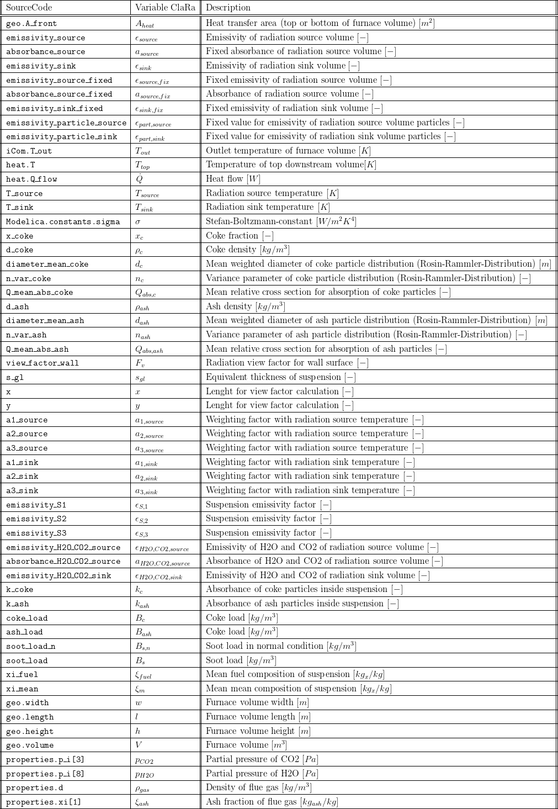
6. Governing Equations
6.1 System Description and General model approach
This model calculates the radiation for the case of a wall surrounding a gas volume according to [2] chapter Kd and Ke. The heat flux is distributed with a view factor taking the furnace geometry into account. The radiation can be calculated with fixed values for absorption and emissivity, but it is recommended to use the temperature and composition dependent calculation of these values to take gas and ash, soot and coke particle radiation more detailed into account. Besides a higher accuracy in most cases, the calculation responds dynamically and more realistic according to changing loads of ash and coke particles as well as flue gas composition and temperatures.
Please note that it is assumed, that the radiating gas volumes are not permeable for radiation, which means that each furnace volume only exchanges radiation with its directly neighbouring volumes. In addition, for the calculation of radiation source/sink emissivitiy and absorbance, it is assumed, that the gas and particle composition inside the neighbouring volumes are identical. This simplifies the calculation (and resulting equation system of the whole furnace model) because substance properties inside the actual volume are needed only. The resulting error is expected to be negligible.
6.2 Governing Model Equations
The calculation is subdivided into three cases:
- Suspension_calculation_type = "Fixed": Fixed predefined values for emissivity and absorbance of the suspension are used
- Suspension_calculation_type = "Gas calculated, particles fixed": Particle emissivity is considered with a fixed value and emissivity and absorbance of H2O and CO2 are calculated temperature and composition dependent. This is a good choice if the needed parameters of the used coal (Rosin-Rammler-Distribution) are unknown.
- Suspension_calculation_type = "Calculated": Emissivity and absorbance of particles and gasses are calculated according to the chosen parameters as well as temperature and composition dependent.
For all three cases the view factor is calculated in the same way. It is assumed, that the radiative volume with its equivalent thickness (s_gl) inside the component is lumped together into one radiating surface, which is exchanging radiation with the downstream furnace volume. The values x and y are calculated for two different orientation cases of the furnace geometry. If the furnace volume orientation is vertical (for example coal furnaces):
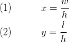
If the orientation is horizontal (for example for heat recovery steam generators of gas turbines):
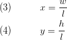
With these values the view factor is calculated. The view factor is calculated for two flat surfaces (top and bottom of the volume) facing each other:

The equivalent thickness of the gas volume is identical for all three cases:
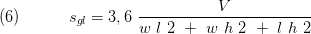
The radiative heat is exchanged between the actual and the downstream furnace volume which temperature is available inside the heat connector. The direction of heat flow is depending on the actual temperatures of the corresponding volumes. Therfore the temperatures T_source and T_sink are introduced which are defined as follows:
If T_top > T_out then
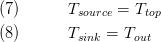
else
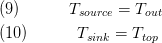
For case 1 (Suspension_calculation_type = "Fixed") the heat transfer is calculated according to the following equation:
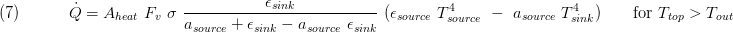
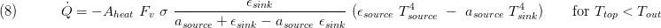
For case 2 (Suspension_calculation_type = "Gas calculated, particles fixed") the heat transfer is calculated as follows:
The weighting factors at radiation source and sink temperature:
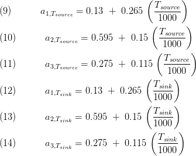
The suspension emissivity factors are calculated with the partial pressure of H2O and CO2 and the equivalent thickness:
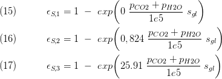
The emissivity of CO2 and H2O of the radiation source volume is calculated as follows:
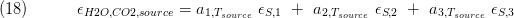
The emissivity of the source volume is now given as:
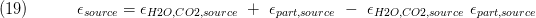
The absorbance of CO2 and H2O of the radiation source volume is calculated with sink temperature:
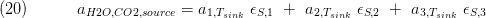
And the absorbance of the radiation source volume is given as:
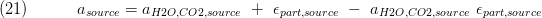
The emissivity of CO2 and H2O of the radiation sink volume is calculated according to simplifications made as follows and equals the absorbance of the sorce absaorbance:
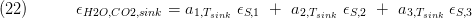
The emissivity of the sink volume is now given as:
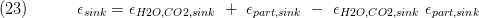
With these values the heat transfer for case 2 can be calculated as follows (identical to eq. 7 and 8):
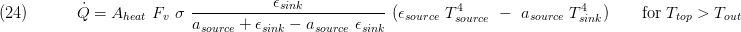
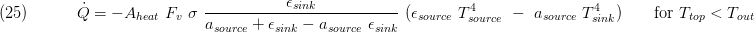
For case 3 (Suspension_calculation_type = "Calculated") the heat transfer is calculated as follows:
The values for emissivity and absorbance of the H2O and CO2 gasses of radiation source and sink are identical to case 2 but here we need to calculate the influence of particle radiation too.
The soot load of the flue gas is given as:
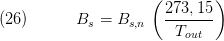
The coke load of the flue gas is given as:
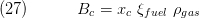
The absorbance of the coke particles is calculated as follows:
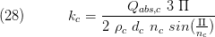
The ash load of the flue gas is given as:
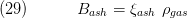
The absorbance of the ash particles is calculated as follows:
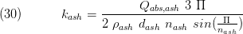
The suspension emissivity factors are calculated with the partial pressure of H2O and CO2, particle emissivities and the equivalent thickness:
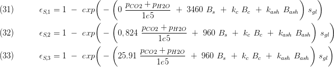
With these values the heat transfer for case 3 can be calculated as follows:
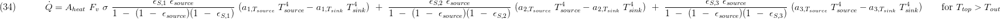
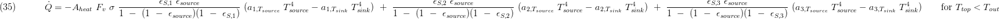
7. Remarks for Usage
8. Validation
9. References
[1] Johannes Brunnemann and Friedrich Gottelt, Kai Wellner, Ala Renz, André Thüring, Volker Röder, Christoph Hasenbein, Christian Schulze, Gerhard Schmitz, Jörg Eiden: "Status of ClaRaCCS: Modelling and Simulation of Coal-Fired Power Plants with CO2 capture", 9th Modelica Conference, Munich, Germany, 2012
[2] VDI Wärmeatlas, Verein Deutscher Ingenieure VDI-Gesellschaft Verfahrenstechnik und Chemieingenieurwesen (GVC), Springer Verlag, 10. Auflage, 2006
10. Version History
25.06.2014 - v0.1 - initial implementation of the model - Lasse Nielsen, TLK-Thermo GmbH
Backlinks: ClaRa:Components:Furnace:FlameRoom:FlameRoom L2 Dynamic ClaRa:Components:Furnace:FlameRoom:FlameRoomAdditionalAir L2 Dynamic ClaRa:Components:Furnace:FlameRoom:FlameRoomAdditionalAir L2 Static ClaRa:Components:Furnace:FlameRoom:FlameRoom L2 Static ClaRa:Components:Furnace:Burner:Burner L2 Dynamic ClaRa:Components:Furnace:Burner:Burner L2 Static